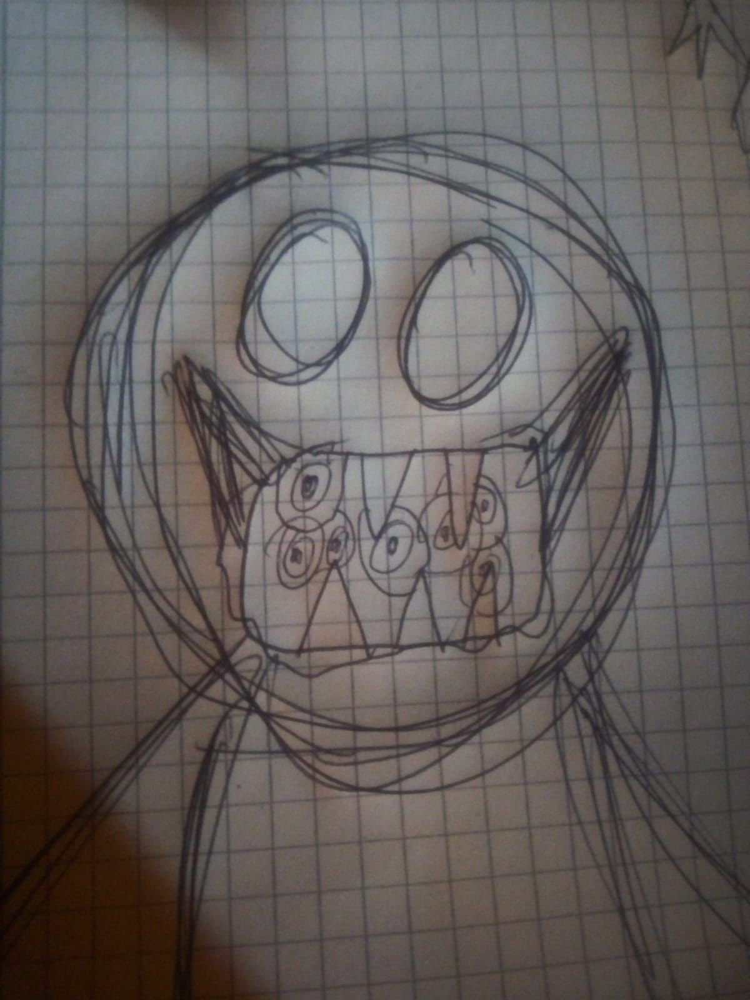
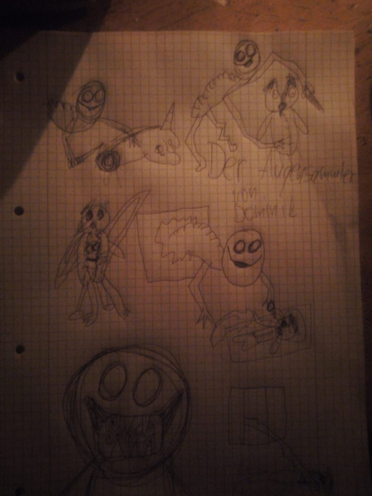
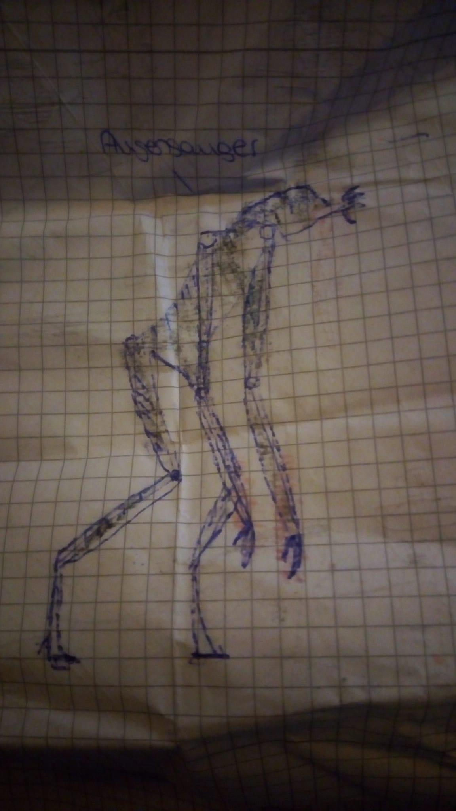
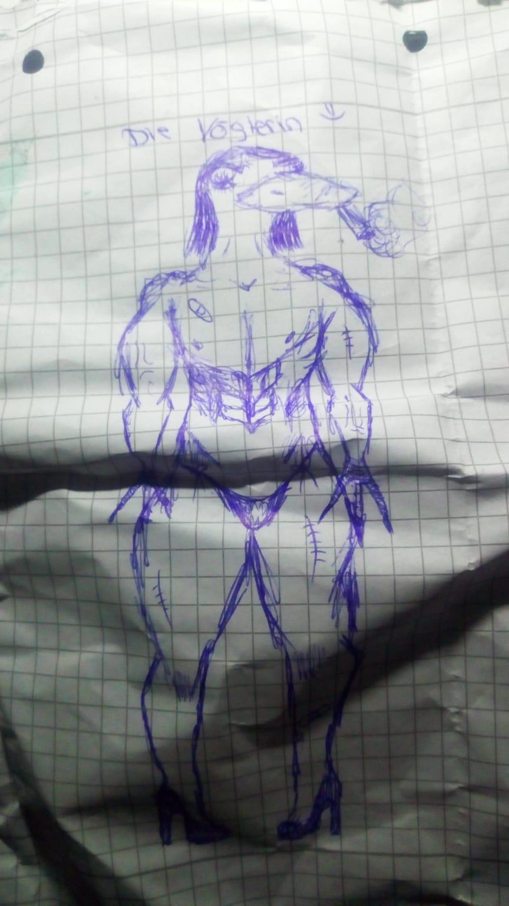
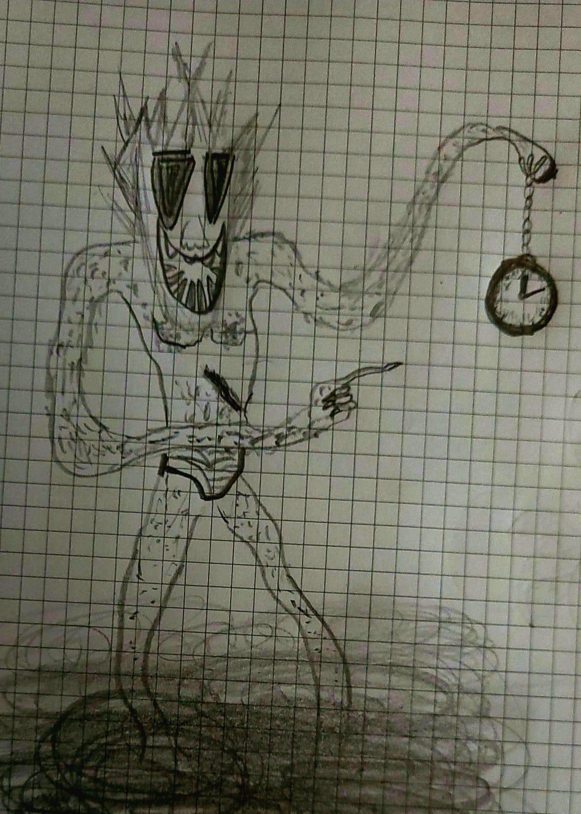

Der Augensammler
Standort: Meiches, Deutschland
Größe 2,20m
Essverhalten: Fleischfresser
Aggressivität: Aggressiv

Der Augensammler wurde das erste mal 2020 im Wald in der Nähe des kleinen Dorfes Meiches in der Nähe einer Holzhütte im Wald gesichtet. Er ist groß, und stellt eine große Gefahr für Leute darf, die in der Nähe des Waldes schlafen.
Sein Verhalten ist eher passiv. Er bewegt sich nur nachts umher, und bleibt in der Dunkelheit versteckt. Er beobachtet alle Menschen, die Nachts in Meiches durch den Wald gehen. Der Augensammler greift nicht einfach so an, stattdessen wartet der Augensammer, bis sein Opfer schläft. Dabei ist dem Augensammler egal, wo die Person liegt. Laut einem Polizeiberichten wurde bei einem Mord im Bereich von Meiches ungewöhlich große Kratzspuren an einem aufgebrochenen Fenster gefunden.
Der Augensammler isst, wie sein Name schon sagt, Augen. Die entnimmt er seinem Opfer mit seinen sehr langen Krallen. Dabei tötet er aber auch sein Opfer.

Der Feldermann
Standort: Regionen im Vogelsberg
Größe: 1,90m
Essverhalten: Fleischfresser
Aggressivität: Neutral
Der Feldermann war die zweite Entität, die von Reisegruppen entdeckt wurde. Der Lebensraum sowie das Verhalten des Feldermanns weicht von dem des Augensammler ab.
Der Feldermann wohnt, wie sein Name sagt, in Feldern. Gefunden wurde er das erste mal in einem Weintraubenfeld während einer Wanderung in den Weinbergen im Vogelsberg. Der Lebensraum ist etwas größer als der des Augensammlers, und es ist auch nicht bekannt, wieviele Feldermänner es gibt. Die Felder helfen dem Feldermann sich wärend dem Tag zu verstecken.
Der Feldermann verhält sich grundsätzlich passiv. Er greift keine Person ohne Grund an. Trotzdem gibt es Berichte von Leichenfunden, die Spuren des Feldermanns vorweisen. Man vermutet, dass der Feldermann nur angreift, wenn man seine Suppe nicht fertig gegessen hat. Nur wenn dies der Fall ist, jagt der Feldermann die Person so lange, bis er sie getötet hat.
Der Augensauger
Standort: Meiches
Größe: 3,00m
Essverhalten: Fleischfresser
Aggressivität: Aggressiv

Die Vöglerin
Standort: Lauterbach
Größe: 3,00m
Essverhalten: Omivore
Aggressivität: Neutral

Der Zeitsammler
Standort: Überall
Größe: 1,80m
Essverhalten: Unbekannt
Aggressivität: Passiv
